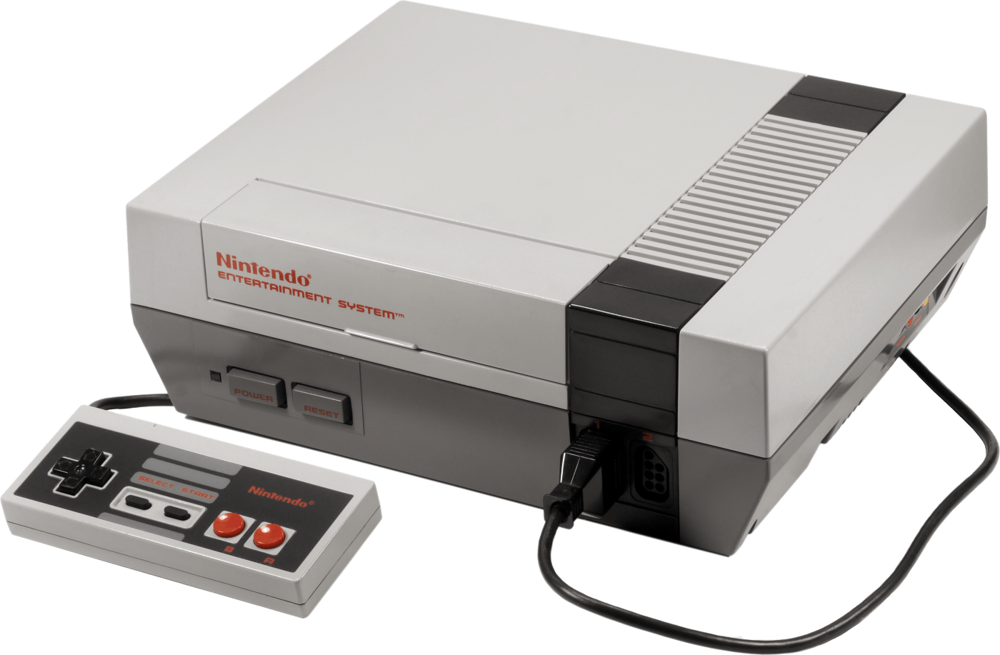

KONZOLOK

Bevezetés
Bevezetés
A Nintendo egy igazi RETRO Konzol, bár vannak újabb verziói, illetve remake-jei is. pl.:Nintendo switch Erre a konzolra kicsit a többitõl eltérõ játékok jelentek meg. Néhány RETRO játék: Pokemon, The Legend of Zelda.
Története
A Nintendo Company, Limited (???????, Nintendó Kabusiki-gaisa) egy japán multinacionális cég. A vállalatot Jamaucsi Fuszadzsiró alapította Kiotóban 1889. szeptember 23-án, eredetileg kézzel készített, ún. hanafuda kártyák gyártására.[3] A 20. század közepén a cég számos piaci szegmensen kísérletezett, például taxi- és szállodaüzemeltetéssel. Az évek során a videojáték-gyártás vált a cég fõ profiljává és a játékipar egyik meghatározó szereplõje lett. Emellett a Nintendo az amerikai Seattle Mariners baseballcsapat többségi, az Atlanta Hawks kosárlabdacsapatnak pedig kisebbségi tulajdonosa. A Nintendo a videojáték-piac legrégebbi, máig fennmaradt három nagy videojátékkonzol-gyártó cég egyike a Microsoft és a Sony mellett. Game Boy Advance és Nintendo DS modelljeinek köszönhetõen piacvezetõ a kézi játékkonzolok gyártásában. 2007. június 30-ig a Nintendo története során 453 millió játékgépet és közel 2,2 milliárd játékprogramot adott el világszerte.
